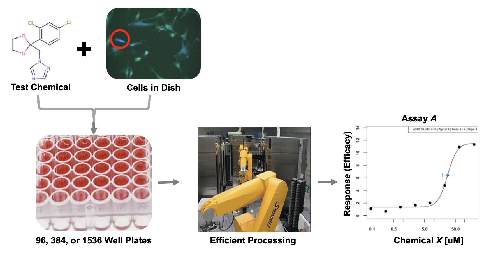
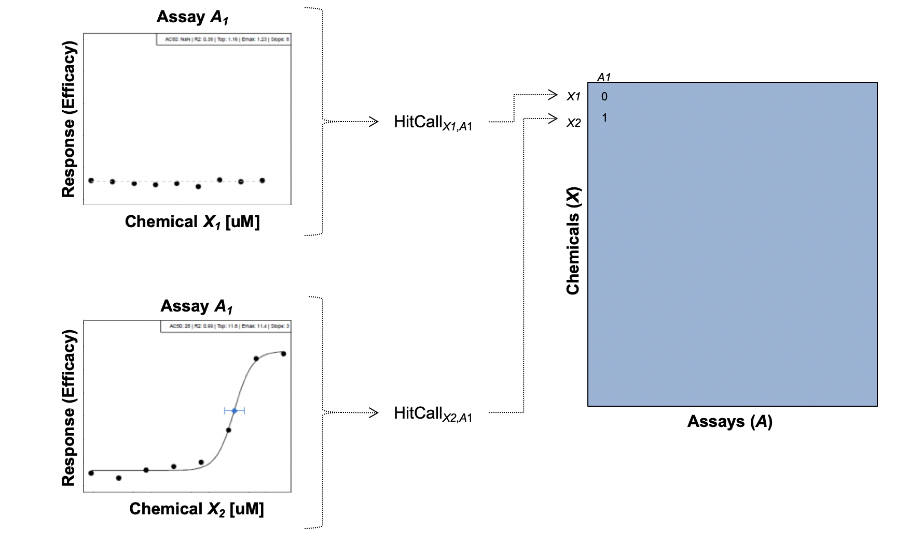
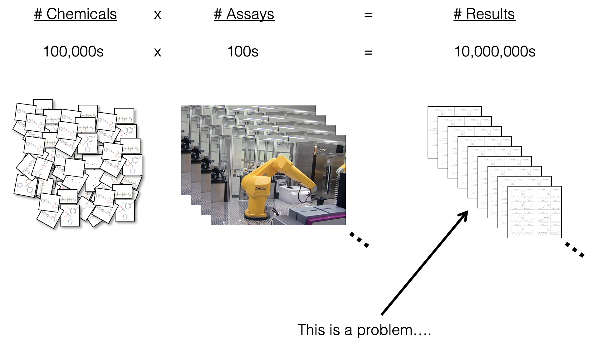
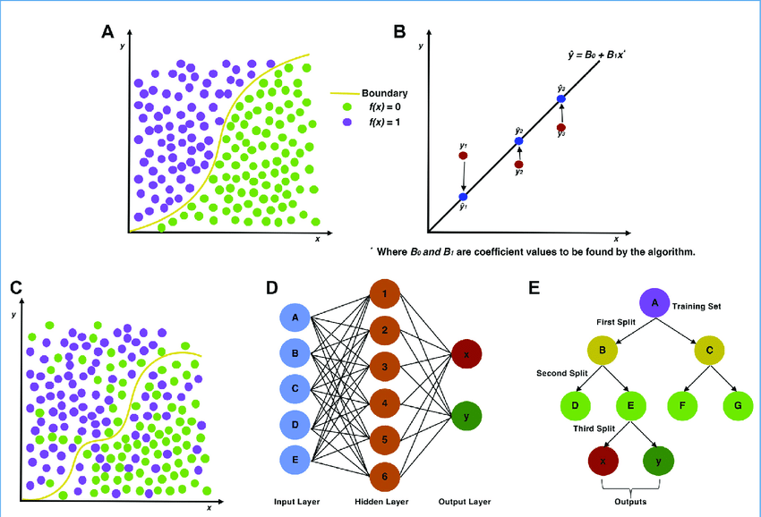
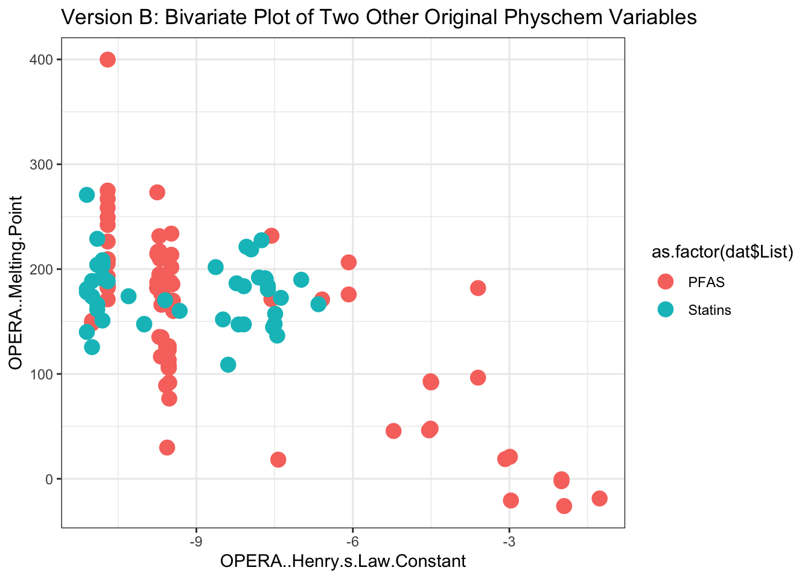
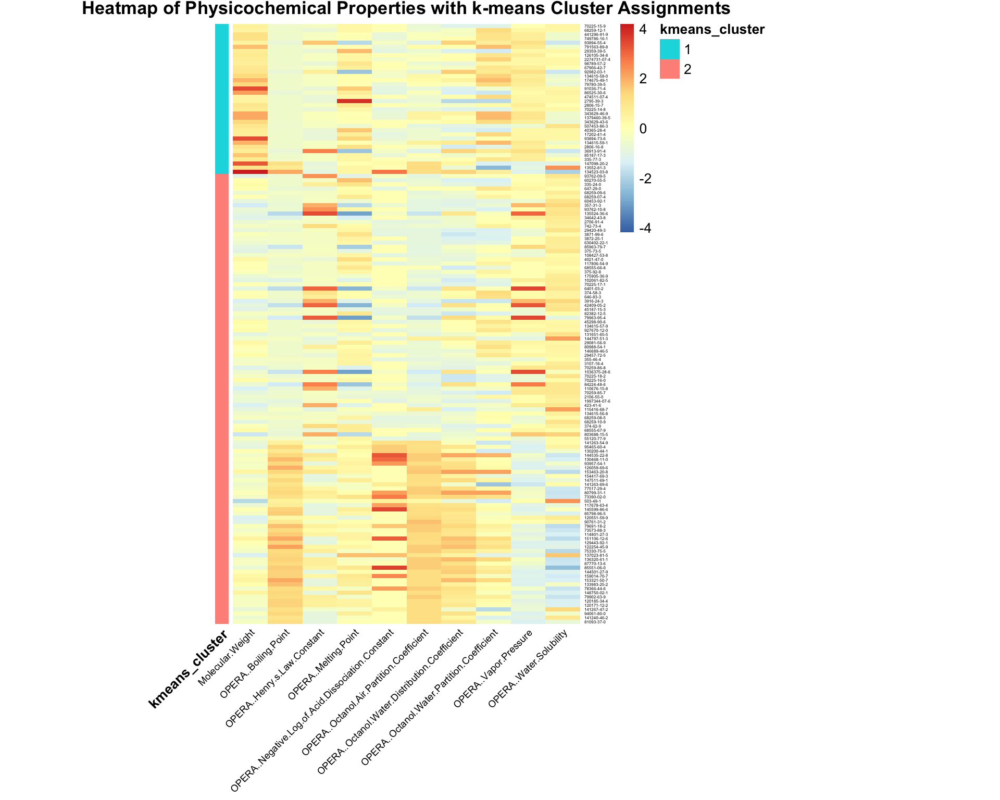
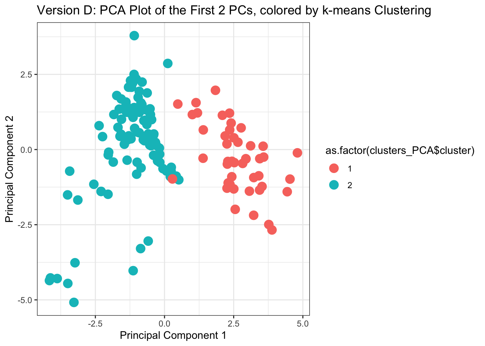

2.2 Machine Learning and Predictive Modeling
The development of this training module was led by Dr. David M. Reif
Fall 2021
The need for predictive modeling
- We can screen for biological responses to a variety of chemical exposures/treatment conditions very efficiently, leveraging technologies like cell-based high-throughput screening

- These screening efforts result in increasing amounts of data, which can be gathered to start building big databases

- Alongside these big databases, the associated dimensionality of these data gets “Big”

- And diversity across types of screening platforms, technologies, cell types, species, etc, leading to compounding dimensionality

How do we even begin to analyze such data?
For diverse, high-dimensional data, new approaches are needed. Traditional statistics may be able to handle 1:1 or 1:many comparisons of singular quantities (e.g. activity concentrations (e.g., AC50s for two chemicals). However, once the modeling needs become overly complex (or exploratory), assumptions of most traditional methods will be violated.
Defining predictive modeling in the context of toxicology and environmental health
We often think of predictions as having a forward-time component (i.e. What will happen next?). What about “prediction” in a different sense as applied to toxicology?
Working definition: Predictive toxicology describes a multidisciplinary approach to chemical toxicity evaluation that more efficiently uses animal test results, when needed, and leverages expanding non-animal test methods to forecast the effects of a chemical on biological systems
eg 1. Can I more efficiently design animal studies and analyze data from shorter assays using less animals to predict long-term health outcomes?
eg 2. Can this suite of in vitro assays predict what would happen in an organism?
eg 3. Can I use diverse, high-dimensional data to cluster chemicals into predicted activity classes?

Similar logic applies to the field of exposure science. What about “prediction” applied to exposure science?
Working definition: Predictive exposure science describes a multidisciplinary approach to chemical exposure evaluations that more efficiently uses biomonitoring, chemical inventory, and other exposure science-relevant databases to forecast exposure rates in target populations.
eg 1. Can I use existing biomonitoring data from NHANES to predict exposure rates for chemicals that have yet to be measured in target populations? (see ExpoCast program, eg. Wambaugh et al.)
eg 2. Can I use chemical product use inventory data to predict the likelihood of a chemical being present in a certain consumer product (eg. Phillips et al.)
Distinguish between machine learning (ML) and traditional statistical methods
There is plenty of debate as to where the line(s) between ML and traditional statistics should be drawn. A perfect delineation is not necessary for our purposes. Rather, we will focus on the usual goals/intent of each to help us understand the distinction for Environmental Health Research.
Working distinction: Statistics draws population inferences from a sample, and machine learning finds generalizable predictive patterns. [https://www.nature.com/articles/nmeth.4642]
Thus, by our working definition of predictive toxicology, we are interested in predictive aspects of ML that can give us generalizable forecasts as to effects of chemicals on biological systems.
The image below shows graphical abstractions of how a “problem” is solved using either traditional statistics in the top row of (A) logistic and (B) linear regression or ML in the bottom row of (C) support vector machines, (D) artificial neural networks, and (E) decision trees. [https://www.sciencedirect.com/science/article/pii/S2590139719300432?via%3Dihub]

The list of ML methods is continually expanding and subject to new taxonomic description.
There are many different types of ML methods that we can employ, depending on the data type / purpose of data analysis. Generally speaking, ML is considered to encompass the study of computer algorithms that can improve automatically through experience and by the use of data. It is seen as a part of artificial intelligence (AI). A recent review written together with Erin Baker’s lab provides a high-level overview on some of the types of ML methods and challenges to address when analyzing multi-omic data (including chemical signature data).
K-Means Clustering
A common type of ML method that will be included in the scripted activity is called k-means clustering. K-means is a common clustering algorithm used to partition quantitative data. This algorithm works by first, randomly selecting a pre-specified number of clusters, k, across the data space, with each cluster having a data centroid. When using a standard Euclidean distance metric, the distance is calculated from an observation to each centroid, then the observation is assigned to the cluster of the closest centroid. After all observations have been assigned to one of the k clusters, the average of all observations in a cluster is calculated, and the centroid for the cluster is moved to the location of the mean. The process then repeats, with the distance computed between the observations and the updated centroids. Observations may be reassigned to the same cluster, or moved to a different cluster if it is closer to another centroid. These iterations continue until there are no longer changes between cluster assignments for observations, resulting in the final cluster assignments that are then carried forward for analysis/interpretation.
Helpful resources on k-means clustering include the following: The Elements of Statistical Learning & Towards Data Science
Principal Component Analysis (PCA)
Another very common ML method you can use to look at big data is a method to reduce high-dimensional data called Principal Component Analysis (PCA). This can be defined in many ways, though here are some of the important elements that underly a PCA:
PCA partitions variance in a dataset into linearly uncorrelated principal components (PCs), which are weighted combinations of the original features.
Each PC (starting from PC1) summarizes a decreasing % of variance.
Every instance (e.g. chemical) in the original dataset has a “score” on each PC.
Any combination of PCs can be compared to summarize relationships amongst the instances (e.g. chemicals).
Introduction to Training Module
In this activity we are going to analyze an example dataset of physicochemical property information for chemicals spanning per- and polyfluoroalkyl substances (PFAS) and statins. PFAS represent a ubiquitous and pervasive class of man-made industrial chemicals that are commonly used in food packaging, commercial household products such as Teflon, cleaning products, and flame retardants. PFAS are recognized as highly stable compounds that, upon entering the environment, can persist for many years and act as harmful sources of exposure. Statins represent a class of lipid-lowering compounds that are commonly used as pharmaceutical treatments for patients at risk of cardiovascular disease. Because of their common use amongst patients, statins can also end up in water and wastewater effluent, making them of environmental relevance as well.
This training module was designed to evaluate the chemical space of these diverse compounds, and to illustrate the utility of machine learning methods to differentiate chemical class and predict chemical groupings that can inform a variety of environmental and toxicological applications. The two types of machine learning methods that will be employed are k-means and PCA (as described in the introduction).
Training Module’s Environmental Health Questions
This training module was specifically developed to answer the following environmental health questions:
- Can we differentiate between PFAS and statin chemical classes, when considering just the raw physicochemical property variables without applying machine learning techniques?
- What are some of the physicochemical properties that seem to be driving chemical clustering patterns derived through k-means?
- Upon reducing the data through PCA, which physicochemical property contributes the most towards informing data variance captured in the primary principal component (Comp.1)?
- How do the data compare when physicochemical properties are reduced using PCA?
- If we did not have information telling us which chemical belonged to which class, could we use PCA and k-means to accurately predict whether a chemical is a PFAS vs statin?
- What kinds of applications/endpoints can be better understood and/or predicted, because of these derived chemical groupings?
Installing required R packages
If you already have these packages installed, you can skip this step, or you can run the below code which checks installation status for you
if (!requireNamespace("ggplot2"))
install.packages("ggplot2", repos = "https://cloud.r-project.org");
if (!requireNamespace("pheatmap"))
install.packages("pheatmap", repos = "https://cloud.r-project.org");Loading R packages required for this session
library(ggplot2)
# Used to make heat maps. This can be done in ggplot2 but pheatmap is easier and nicer
library(pheatmap) Getting help with packages and functions
# Package documentation for ggplot2
?ggplot2
# Package documentation for kmeans (a part of the standard stats R package,
# automatically uploaded)
?kmeans
# Package documentation for deriving principal components within a PCA
# (a part of the standard stats R package, automatically uploaded)
?princomp
# Package documentation for pheatmap
?pheatmap Set your working directory
setwd("/filepath to where your input files are") # e.g. setwd("/Downloads")Loading the Example Dataset
Let’s start by loading the datasets needed for this training module. We are going to use a dataset of substances that have a diverse chemical space of PFAS and statin compounds. This list of chemicals will be uploaded alongside physicochemical property data. The chemical lists for ‘PFAS’ and ‘Statins’ were obtained from the EPA’s Computational Toxicology Dashboard Chemical Lists. The physicochemical properties were obtained by uploading these lists into the National Toxoicology Program’s Integrated Chemical Environment (ICE).
dat <- read.csv("Module2_2/Module2_2_Chemical_Lists_PFAS-Statins.csv",
fileEncoding="UTF-8-BOM")Data Viewing
Let’s first view the substances dataset, starting with the overall dimensions:
dim(dat)## [1] 144 14Then looking at the first four rows and five columns of data:
dat[1:4,1:5]## List Substance.Name CASRN
## 1 PFAS Perfluoro-2-(trifluoromethyl)propanesulphonic acid 93762-09-5
## 2 PFAS Potassium perfluoroheptanesulfonate 60270-55-5
## 3 PFAS Bis(2-hydroxyethyl)ammonium perfluoroheptanesulfonate 70225-15-9
## 4 PFAS Potassium perfluoro-p-ethylcyclohexanesulfonate 335-24-0
## DTXSID Molecular.Weight
## 1 DTXSID90239569 300.100
## 2 DTXSID9069392 488.212
## 3 DTXSID60880946 555.258
## 4 DTXSID50880117 500.223Note that the first column, ‘List’, designates the following two larger chemical classes:
unique(dat$List)## [1] "PFAS" "Statins"Let’s lastly view all of the column headers:
colnames(dat)## [1] "List"
## [2] "Substance.Name"
## [3] "CASRN"
## [4] "DTXSID"
## [5] "Molecular.Weight"
## [6] "OPERA..Boiling.Point"
## [7] "OPERA..Henry.s.Law.Constant"
## [8] "OPERA..Melting.Point"
## [9] "OPERA..Negative.Log.of.Acid.Dissociation.Constant"
## [10] "OPERA..Octanol.Air.Partition.Coefficient"
## [11] "OPERA..Octanol.Water.Distribution.Coefficient"
## [12] "OPERA..Octanol.Water.Partition.Coefficient"
## [13] "OPERA..Vapor.Pressure"
## [14] "OPERA..Water.Solubility"In the data file, the first four columns represent chemical identifier information. All remaining columns represent different physicochemical properties derived from OPERA via Integrated Chemical Environment (ICE). Because the original titles of these physicochemical properties contained commas and spaces, R automatically coverted these into periods. Hence, titles like “OPERA..Boiling.Point”
For ease of downstream data analyses, let’s create a more focused dataframe option containing only one chemical identifier (CASRN) as row names, and then just the physicochemical property columns.
dat.x <- dat[,5:ncol(dat)]
rownames(dat.x) <- dat$CASRNNow we can explore this data subset.
# Overall dimensions
dim(dat.x) ## [1] 144 10# Viewing the first four rows and five columns
dat.x[1:4,1:5] ## Molecular.Weight OPERA..Boiling.Point OPERA..Henry.s.Law.Constant
## 93762-09-5 300.100 213.095 -3.60
## 60270-55-5 488.212 223.097 -9.75
## 70225-15-9 555.258 223.097 -9.75
## 335-24-0 500.223 220.578 -7.56
## OPERA..Melting.Point
## 93762-09-5 96.455
## 60270-55-5 273.228
## 70225-15-9 182.152
## 335-24-0 231.827
## OPERA..Negative.Log.of.Acid.Dissociation.Constant
## 93762-09-5 0.175
## 60270-55-5 -1.810
## 70225-15-9 1.000
## 335-24-0 1.000colnames(dat.x)## [1] "Molecular.Weight"
## [2] "OPERA..Boiling.Point"
## [3] "OPERA..Henry.s.Law.Constant"
## [4] "OPERA..Melting.Point"
## [5] "OPERA..Negative.Log.of.Acid.Dissociation.Constant"
## [6] "OPERA..Octanol.Air.Partition.Coefficient"
## [7] "OPERA..Octanol.Water.Distribution.Coefficient"
## [8] "OPERA..Octanol.Water.Partition.Coefficient"
## [9] "OPERA..Vapor.Pressure"
## [10] "OPERA..Water.Solubility"Let’s first see how these chemicals group when using the ‘real’ physicochemical property data, without any fancy data reduction or other machine learning techniques. We can plot chemicals along the first two ‘real’ properties, with molecular weight as one axis and boiling point as the other.
Here we can create a plot using basic ggplot functions, coloring by the chemical classes from the ‘List’ column of the original dataframe.
ggplot(as.data.frame(dat.x[,1:2]), aes(x=Molecular.Weight, y=OPERA..Boiling.Point,
color=as.factor(dat$List))) +
geom_point(size=4) + theme_bw() +
ggtitle('Version A: Bivariate Plot of Two Original Physchem Variables') +
xlab("Molecular Weight") + ylab("Boiling Point")
Now we can plot chemicals along the next two sets of ‘real’ property data, with Henry’s Law constant as one axis and melting point as the other.
Here we can create a plot using basic ggplot functions, coloring by the chemical classes from the ‘List’ column of the original dataframe.
ggplot(as.data.frame(dat.x[,3:4]), aes(x=OPERA..Henry.s.Law.Constant,
y=OPERA..Melting.Point,
color=as.factor(dat$List))) +
geom_point(size=4) + theme_bw() +
ggtitle('Version B: Bivariate Plot of Two Other Original Physchem Variables') +
xlab("OPERA..Henry.s.Law.Constant") + ylab("OPERA..Melting.Point")
These plots provide two examples illustrating part of the distribution of physicochemical property data across the two classes of chemicals, spanning PFAS and statins.
With these, we can answer Environmental Health Question 1: Can we differentiate between PFAS and statin chemical classes, when considering just the raw physicochemical property variables without applying machine learning techniques?
Answer: Only in part. From the first plot, we can see that PFAS tend to have lower molecular weight ranges in comparison to the statins, though other property variables clearly overlap in ranges of values, making the groupings not entirely clear.
With this data summary, we can answer Environmental Health Question 1: Which target tissue demonstrated the overall highest incidence of tumor formation from any single dose of Chemical Z?
Answer: The kidney indicates a maximum of 9 animals with tumors developing from a single dose, representing an alarming incidence rate of 90%.
K-means Analysis
Identifying Clusters of Chemicals through k-means
Let’s derive clusters of chemicals, based on ALL underlying physicochemical property data, using k-means clustering. For this example, let’s coerce the k-means algorithms to calculate n=2 distinct clusters (based on their corresponding mean centered values). Here we choose to derive two distinct clusters, because we are ultimately going to see if we can use this information to predict each chemical’s classification into two distinct chemical classes (i.e., PFAS vs statins). Note that we can derive more clusters using similar code, depending on the question being addressed.
We can give a name to this variable, to easily provide the number of clusters in the next lines of code, ‘num.centers’:
num.centers <- 2Estimate k-means Clusters
Here we derive chemical clusters using k-means:
clusters <- kmeans(dat.x, # input dataframe
centers = num.centers, # number of cluster centers to calculate
iter.max = 1000, # the maximum number of iterations allowed
nstart = 50) # the number of rows used as the random
# set for the initial centers
# (during the first iteration)The resulting property values that were derived as the final cluster centers can be pulled using:
clusters$centers## Molecular.Weight OPERA..Boiling.Point OPERA..Henry.s.Law.Constant
## 1 395.0716 281.4445 -8.655185
## 2 690.1443 233.0402 -9.589444
## OPERA..Melting.Point OPERA..Negative.Log.of.Acid.Dissociation.Constant
## 1 157.5036 1.33226852
## 2 183.7980 0.01658333
## OPERA..Octanol.Air.Partition.Coefficient
## 1 6.629556
## 2 5.940861
## OPERA..Octanol.Water.Distribution.Coefficient
## 1 -1.271315
## 2 -2.541750
## OPERA..Octanol.Water.Partition.Coefficient OPERA..Vapor.Pressure
## 1 3.010302 -6.762009
## 2 4.000639 -5.538889
## OPERA..Water.Solubility
## 1 -3.450750
## 2 -3.760222Visualize k-means Clusters
Let’s add the cluster assignments to the physicochemical data and create a new dataframe, which can then be used in a heat map visualization to see how these physicochemical data distributions clustered according to k-means.
These cluster assignments can be pulled from the ‘cluster’ list output, selecting the ‘cluster’ list, where chemicals are designated to each cluster with either a 1 or 2. You can view these using:
clusters$cluster## 93762-09-5 60270-55-5 70225-15-9 335-24-0 647-29-0 68259-12-1
## 1 1 2 1 1 2
## 68259-09-6 68259-07-4 60453-92-1 357-31-3 441296-91-9 749786-16-1
## 1 1 1 1 2 2
## 93762-10-8 135524-36-6 93894-55-4 34642-43-8 2706-91-4 791563-89-8
## 1 1 2 1 1 2
## 742-73-4 29420-49-3 3871-99-6 29359-39-5 3872-25-1 126105-34-8
## 1 1 1 2 1 2
## 630402-22-1 2274731-07-4 98789-57-2 85963-79-7 375-73-5 108427-53-8
## 1 2 2 1 1 1
## 4021-47-0 117806-54-9 67906-42-7 68555-66-8 92982-03-1 375-92-8
## 1 1 2 1 2 1
## 175905-36-9 102061-82-5 134615-58-0 174675-49-1 79780-39-5 91036-71-4
## 1 1 2 2 2 2
## 70225-17-1 6401-03-2 374-58-3 646-83-3 86525-30-6 3916-24-3
## 1 1 1 1 2 1
## 42409-05-2 474511-07-4 2795-39-3 45187-15-3 82382-12-5 79963-95-4
## 1 2 2 1 1 1
## 45298-90-6 134615-57-9 927670-12-0 2806-15-7 70225-14-8 131651-65-5
## 1 1 1 2 2 1
## 343629-46-9 144797-51-3 29081-56-9 80988-54-1 1379460-39-5 343629-43-6
## 2 1 1 1 2 2
## 146689-46-5 29457-72-5 355-46-4 3107-18-4 70259-86-8 1036375-28-6
## 1 1 1 1 1 1
## 70225-18-2 70225-16-0 84224-48-6 507453-86-3 40365-28-4 110676-15-8
## 1 1 1 2 2 1
## 70259-85-7 2106-55-0 1997344-07-6 423-41-6 115416-68-7 17202-41-4
## 1 1 1 1 1 2
## 93894-73-6 134615-56-8 134615-59-1 68259-08-5 68259-10-9 374-62-9
## 2 1 2 1 1 1
## 68555-67-9 2806-16-8 36913-91-4 85187-17-3 803688-15-5 55120-77-9
## 1 2 2 2 1 1
## 335-77-3 141263-54-9 95465-60-4 130200-44-1 144535-22-8 130468-11-0
## 2 1 1 1 1 1
## 93957-54-1 126059-69-6 153463-20-8 154417-69-3 147511-69-1 141263-69-6
## 1 1 1 1 1 1
## 77517-29-4 80799-31-1 73390-02-0 503-49-1 117678-63-4 145599-86-6
## 1 1 1 1 1 1
## 147098-20-2 85798-96-5 120551-59-9 13552-81-3 90761-31-2 79691-18-2
## 2 1 1 2 1 1
## 73573-88-3 114801-27-3 151106-12-6 129443-92-1 134523-03-8 122254-45-9
## 1 1 1 1 2 1
## 75330-75-5 137023-81-5 136320-61-1 87770-13-6 85551-06-0 144501-27-9
## 1 1 1 1 1 1
## 159014-70-7 153321-50-7 133983-25-2 78366-44-6 148750-02-1 79902-63-9
## 1 1 1 1 1 1
## 120185-34-4 120171-12-2 141267-47-2 94061-80-0 141240-46-2 81093-37-0
## 1 1 1 1 1 1Because these results are listed in the exact same order as the inputted dataframe, we can simply bind these assignments to the dat.x dataframe using cbind().
dat_wclusters <- as.data.frame(cbind(dat.x,clusters$cluster))
# Renaming this new column "kmeans_cluster"
colnames(dat_wclusters)[11] <- "kmeans_cluster"
# Sorting data by cluster assignments
dat_wclusters <- dat_wclusters[order(dat_wclusters$kmeans_cluster),] Heat Map Visualizations
To generate a heat map, we need to first create a separate dataframe for the cluster assignments, ordered in the same way as the physicochemical data:
# Creating the dataframe
hm_cluster <- data.frame(dat_wclusters$kmeans_cluster,
row.names=row.names(dat_wclusters))
# Reassigning the column name
colnames(hm_cluster) <- "kmeans_cluster"
# Coercing the cluster numbers into factor variables, to make the heat map prettier
hm_cluster$kmeans_cluster <- as.factor(hm_cluster$kmeans_cluster)
# Viewing this new cluster assignment dataframe
head(hm_cluster) ## kmeans_cluster
## 93762-09-5 1
## 60270-55-5 1
## 335-24-0 1
## 647-29-0 1
## 68259-09-6 1
## 68259-07-4 1Then we can call this dataframe, as well as the main physicochemical property dataframe (both sorted by clusters) into the following heat map visualization code, leveraging the pheatmap function.
chem_hm <- pheatmap(dat_wclusters[,1:10],
main="Heat Map of Physicochemical Properties with k-means Cluster Assignments",
cluster_rows=FALSE, cluster_cols = FALSE, # no further clustering, for simplicity
scale="column", # scaling the data to make differences across chemicals more apparent
annotation_row = hm_cluster, # calling the cluster assignment dataframe as a separate color bar
angle_col = 45, fontsize_col = 7, fontsize_row = 3, # adjusting size and orientation of labels on axes
cellheight = 3, cellwidth = 25, # setting height and width for cells
border_color = FALSE # specify no border surrounding the cells
)
Shown here is a heat map displaying the relative values for each physicochemical property, with all 10 properties listed along the bottom. Individual chemicals are listed along the right hand side. The k-means cluster assignment is provided as a separate color bar on the left.
With this, we can answer Environmental Health Question 2: What are some of the physicochemical properties that seem to be driving chemical clustering patterns derived through k-means?
Answer: Properties with values that show obvious differences between resulting clusters including molecular weight, boiling point, negative log of acid dissociation constant, octanol air partition coefficient, and octanol water distribution coefficient.
Principal Component Analysis
Next, we will run through some example analyses applying the common data reduction technique of PCA.
We can calculate the principal components across ALL physicochemical data across all chemicals using the princomp function.
my.pca <- princomp(dat.x, # input dataframe of physchem data
cor = T) # calculations will be based on the correlation matrix
# (as opposed to covariance) since we have all numeric
# values here (default PCA option)Here are the resulting scores for each chemical’s contribution towards each principal component (shown here as components 1-10).
head(my.pca$scores)## Comp.1 Comp.2 Comp.3 Comp.4 Comp.5 Comp.6
## 93762-09-5 -2.0425355 -1.4875982 -1.29779776 -0.04882877 0.25393797 -0.6799177
## 60270-55-5 -1.2291769 2.2936873 0.24345932 0.40280922 0.63000240 -1.0186985
## 70225-15-9 -1.0982561 1.3963638 0.03352018 0.90707254 0.05756006 0.1438501
## 335-24-0 -1.1374460 1.0712815 -0.14349891 1.09092722 0.21246867 -0.9427527
## 647-29-0 -0.4847481 0.1264224 1.16553341 -1.11771990 -0.29674860 0.1924128
## 68259-12-1 -0.3276157 0.2377300 1.32445577 -0.47677888 -1.17966092 0.0593078
## Comp.7 Comp.8 Comp.9 Comp.10
## 93762-09-5 0.14597268 1.25959099 0.231742917 -0.14124625
## 60270-55-5 0.11356003 -0.34454904 -0.385021331 -0.09883538
## 70225-15-9 -0.38489641 0.01723486 -0.006725509 0.02725202
## 335-24-0 0.22957369 0.11497271 -0.108096107 -0.17762819
## 647-29-0 0.18292023 -0.48181130 0.075229509 -0.22829905
## 68259-12-1 -0.01404007 0.03803686 0.043460416 0.18095023And the resulting loading factors of each property’s contribution towards each principal component.
head(my.pca$loadings)## Comp.1 Comp.2
## Molecular.Weight 0.09825313 0.108454961
## OPERA..Boiling.Point 0.46350428 0.029650863
## OPERA..Henry.s.Law.Constant -0.17856542 -0.502116638
## OPERA..Melting.Point 0.20645719 0.474473487
## OPERA..Negative.Log.of.Acid.Dissociation.Constant 0.32172963 -0.119465105
## OPERA..Octanol.Air.Partition.Coefficient 0.45329804 -0.008918089
## Comp.3 Comp.4
## Molecular.Weight 0.6797404 0.48432419
## OPERA..Boiling.Point -0.1993659 -0.03108544
## OPERA..Henry.s.Law.Constant -0.1798767 0.27695374
## OPERA..Melting.Point 0.2148579 0.09449999
## OPERA..Negative.Log.of.Acid.Dissociation.Constant -0.2862395 0.58268278
## OPERA..Octanol.Air.Partition.Coefficient -0.1321577 -0.04820475
## Comp.5 Comp.6
## Molecular.Weight 0.17351578 0.35736795
## OPERA..Boiling.Point 0.22224554 -0.01850753
## OPERA..Henry.s.Law.Constant 0.30566003 -0.47066669
## OPERA..Melting.Point -0.08063905 -0.68672356
## OPERA..Negative.Log.of.Acid.Dissociation.Constant -0.66998767 0.02924804
## OPERA..Octanol.Air.Partition.Coefficient 0.20778895 0.20575789
## Comp.7 Comp.8
## Molecular.Weight 0.11763362 0.32938640
## OPERA..Boiling.Point 0.12503355 0.09718690
## OPERA..Henry.s.Law.Constant 0.21138163 0.44526650
## OPERA..Melting.Point 0.34342931 -0.10233816
## OPERA..Negative.Log.of.Acid.Dissociation.Constant -0.09083446 0.03113686
## OPERA..Octanol.Air.Partition.Coefficient 0.44434707 -0.29734602
## Comp.9 Comp.10
## Molecular.Weight 0.03295675 0.02698233
## OPERA..Boiling.Point 0.03336277 0.81709497
## OPERA..Henry.s.Law.Constant 0.19706729 -0.10099077
## OPERA..Melting.Point -0.24532148 -0.10229774
## OPERA..Negative.Log.of.Acid.Dissociation.Constant 0.02576652 -0.03380215
## OPERA..Octanol.Air.Partition.Coefficient 0.49672303 -0.39565984my.pca$loadings##
## Loadings:
## Comp.1 Comp.2 Comp.3 Comp.4
## Molecular.Weight 0.108 0.680 0.484
## OPERA..Boiling.Point 0.464 -0.199
## OPERA..Henry.s.Law.Constant -0.179 -0.502 -0.180 0.277
## OPERA..Melting.Point 0.206 0.474 0.215
## OPERA..Negative.Log.of.Acid.Dissociation.Constant 0.322 -0.119 -0.286 0.583
## OPERA..Octanol.Air.Partition.Coefficient 0.453 -0.132
## OPERA..Octanol.Water.Distribution.Coefficient 0.330 -0.437 -0.151
## OPERA..Octanol.Water.Partition.Coefficient 0.162 -0.343 0.467 -0.485
## OPERA..Vapor.Pressure -0.352 -0.350 0.195 0.250
## OPERA..Water.Solubility -0.365 0.255 -0.254 -0.130
## Comp.5 Comp.6 Comp.7 Comp.8
## Molecular.Weight 0.174 0.357 0.118 0.329
## OPERA..Boiling.Point 0.222 0.125
## OPERA..Henry.s.Law.Constant 0.306 -0.471 0.211 0.445
## OPERA..Melting.Point -0.687 0.343 -0.102
## OPERA..Negative.Log.of.Acid.Dissociation.Constant -0.670
## OPERA..Octanol.Air.Partition.Coefficient 0.208 0.206 0.444 -0.297
## OPERA..Octanol.Water.Distribution.Coefficient 0.169 0.220
## OPERA..Octanol.Water.Partition.Coefficient -0.485 -0.162 0.178
## OPERA..Vapor.Pressure 0.350 -0.654
## OPERA..Water.Solubility -0.291 0.284 0.652 0.350
## Comp.9 Comp.10
## Molecular.Weight
## OPERA..Boiling.Point 0.817
## OPERA..Henry.s.Law.Constant 0.197 -0.101
## OPERA..Melting.Point -0.245 -0.102
## OPERA..Negative.Log.of.Acid.Dissociation.Constant
## OPERA..Octanol.Air.Partition.Coefficient 0.497 -0.396
## OPERA..Octanol.Water.Distribution.Coefficient -0.744 -0.199
## OPERA..Octanol.Water.Partition.Coefficient 0.306
## OPERA..Vapor.Pressure 0.313
## OPERA..Water.Solubility
##
## Comp.1 Comp.2 Comp.3 Comp.4 Comp.5 Comp.6 Comp.7 Comp.8 Comp.9
## SS loadings 1.0 1.0 1.0 1.0 1.0 1.0 1.0 1.0 1.0
## Proportion Var 0.1 0.1 0.1 0.1 0.1 0.1 0.1 0.1 0.1
## Cumulative Var 0.1 0.2 0.3 0.4 0.5 0.6 0.7 0.8 0.9
## Comp.10
## SS loadings 1.0
## Proportion Var 0.1
## Cumulative Var 1.0With these results, we can answer Environmental Health Question 3: Upon reducing the data through PCA, which physicochemical property contributes the most towards informing data variance captured in the primary principal component (Comp.1)?
Answer: Boiling point contributes the most towards principal component #1.
Variance Captured by each Principal Component
We can view summary statistics describing how much of the variance from the original dataset was captured by each component, using the summary function.
summary(my.pca)## Importance of components:
## Comp.1 Comp.2 Comp.3 Comp.4 Comp.5
## Standard deviation 2.0230157 1.5440214 1.2415840 0.76635873 0.6905932
## Proportion of Variance 0.4092593 0.2384002 0.1541531 0.05873057 0.0476919
## Cumulative Proportion 0.4092593 0.6476595 0.8018125 0.86054312 0.9082350
## Comp.6 Comp.7 Comp.8 Comp.9 Comp.10
## Standard deviation 0.60491164 0.48939394 0.40589919 0.32548349 0.203793303
## Proportion of Variance 0.03659181 0.02395064 0.01647542 0.01059395 0.004153171
## Cumulative Proportion 0.94482682 0.96877746 0.98525288 0.99584683 1.000000000We can also calculate these values, and pull them into a dataframe for future use.
For example, to pull the percentage of variance explained by each principal component, we can run the following calculations, where first eigenvalues (eigs) are calculated and then used to calculate percent of variance, per principal component:
eigs <- my.pca$sdev^2
Comp.stats <- data.frame(eigs, eigs/sum(eigs), row.names=names(eigs))
colnames(Comp.stats) <- c("Eigen_Values", "Percent_of_Variance")
head(Comp.stats)## Eigen_Values Percent_of_Variance
## Comp.1 4.0925925 0.40925925
## Comp.2 2.3840022 0.23840022
## Comp.3 1.5415308 0.15415308
## Comp.4 0.5873057 0.05873057
## Comp.5 0.4769190 0.04769190
## Comp.6 0.3659181 0.03659181Here, we can see that Principal Component #1 (Comp.1) captures ~41% of the variance across all physicochemical property values, across all chemicals. Principal Component #2 captures ~24%, etc.
Visualizing PCA Results
Let’s now view the results of this PCA, focusing on the first two principal components, and coloring each chemical according to class (i.e. PFAS vs statins).
ggplot(as.data.frame(my.pca$scores), aes(x=Comp.1, y=Comp.2, color=as.factor(dat$List))) +
geom_point(size=4) + theme_bw() +
ggtitle('Version C: PCA Plot of the First 2 PCs, colored by Chemical Class') +
xlab("Principal Component 1") + ylab("Principal Component 2")
With this, we can answer Environmental Health Question 4: How do the data compare when physicochemical properties are reduced using PCA?
Answer: Data become more compressed, and variables reduce across principal components capturing the majority of variance. This results in improved data visualizations, where all dimensions of the physiochemical dataset are compressed and captured across the displayed components.
Combining K-Means with PCA
Incorporating K-Means into PCA for Predictive Modeling
We can also identify cluster-based trends within data that are reduced, after running PCA. This example analysis does so, expanding upon the previously generated PCA results.
Estimate k-means clusters from PCA results
Let’s first run script, similar to the previous k-means analysis and associated parameters, though instead here we will use data reduced values from the PCA analysis. Specifically, clusters across PCA “scores” values will be derived, where scores represent the relative amount each chemical contributed to each principal component.
clusters_PCA <- kmeans(my.pca$scores, centers = num.centers, iter.max = 1000, nstart = 50)The resulting PCA score values that were derived as the final cluster centers can be pulled using:
clusters_PCA$centers## Comp.1 Comp.2 Comp.3 Comp.4 Comp.5 Comp.6
## 1 -1.191669 0.1393319 0.2836947 -0.004022509 -0.08434048 -0.02299446
## 2 2.621672 -0.3065303 -0.6241284 0.008849520 0.18554906 0.05058781
## Comp.7 Comp.8 Comp.9 Comp.10
## 1 -0.01558687 0.02403981 0.008361355 -0.005429933
## 2 0.03429111 -0.05288759 -0.018394982 0.011945853Viewing the final cluster assignment, per chemical:
head(cbind(rownames(dat.x),clusters_PCA$cluster))## [,1] [,2]
## 93762-09-5 "93762-09-5" "1"
## 60270-55-5 "60270-55-5" "1"
## 70225-15-9 "70225-15-9" "1"
## 335-24-0 "335-24-0" "1"
## 647-29-0 "647-29-0" "1"
## 68259-12-1 "68259-12-1" "1"Visualizing k-means clusters from PCA results
Let’s now view, again, the results of the main PCA, focusing on the first two principal components; though this time let’s color each chemical according to k-means cluster.
ggplot(as.data.frame(my.pca$scores), aes(x=Comp.1, y=Comp.2,
color=as.factor(clusters_PCA$cluster))) +
geom_point(size=4) + theme_bw() +
ggtitle('Version D: PCA Plot of the First 2 PCs, colored by k-means Clustering') +
xlab("Principal Component 1") + ylab("Principal Component 2")
With this, we can answer Environmental Health Question 5: If we did not have information telling us which chemical belonged to which class, could we use PCA and k-means to accurately predict whether a chemical is a PFAS vs statin?
Answer: Yes!! Groupings derived from k-means, displayed in this PCA plot, line up almost exactly with the grouping of chemical classes (see Version C of this plot as the direct comparison).
We can also answer Environmental Health Question 6: What kinds of applications/endpoints can be better understood and/or predicted, because of these derived chemical groupings?
Answer:
- With these well-informed chemical groupings, we can now better understand the variables that attribute to the chemical classifications.
- We can also use this information to better understand data trends, and predict environmental fate and transport for these chemicals.
- The reduced variables derived through PCA, and/or k-means clustering patterns can also be used as input variables to predict toxicological outcomes.
Concluding Remarks
In conclusion, this training module provide an example exercise on organizing physicochemical data, and analyzing trends within these data to determine chemical groupings. Results are compared from those produced using just the original data vs. clustered data from k-means vs. reduced data from PCA. K-means is then used in combination with PCA approaches to showcase the power of these machine learning methods, where the classes of each chemical were able to be predicted with high levels of accuracy. These methods represent common tools that are used in high dimensional data analyses within the field of environmental health sciences.
For additional case studies that leverage more advanced machine learning techniques, see the following recent publications that also address environmental health questions from our research groups:
Clark J, Avula V, Ring C, Eaves LA, Howard T, Santos HP, Smeester L, Bangma JT, O’Shea TM, Fry RC, Rager JE. Comparing the Predictivity of Human Placental Gene, microRNA, and CpG Methylation Signatures in Relation to Perinatal Outcomes. Toxicol Sci. 2021 Sep 28;183(2):269-284. PMID: 34255065
Green AJ, Mohlenkamp MJ, Das J, Chaudhari M, Truong L, Tanguay RL, Reif DM. Leveraging high-throughput screening data, deep neural networks, and conditional generative adversarial networks to advance predictive toxicology. PLoS Comput Biol. 2021 Jul 2;17(7):e1009135. PMID: 3421407
Odenkirk MT, Reif DM, Baker ES. Multiomic Big Data Analysis Challenges: Increasing Confidence in the Interpretation of Artificial Intelligence Assessments. Anal Chem. 2021 Jun 8;93(22):7763-7773. PMID: 34029068
To KT, Truong L, Edwards S, Tanguay RL, Reif DM. Multivariate modeling of engineered nanomaterial features associated with developmental toxicity. NanoImpact. 2019 Apr;16:10.1016. PMID: 32133425
Ring C, Sipes NS, Hsieh JH, Carberry C, Koval LE, Klaren WD, Harris MA, Auerbach SS, Rager JE. Predictive modeling of biological responses in the rat liver using in vitro Tox21 bioactivity: Benefits from high-throughput toxicokinetics. Comput Toxicol. 2021 May;18:100166. PMID: 34013136